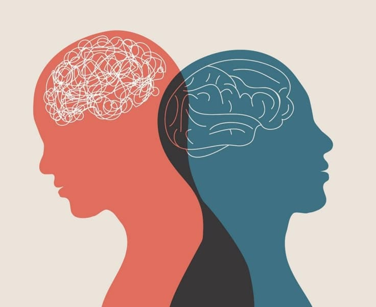

SALUD MENTAL


¿POR QUÉ ES IMPORTANTE?
- Mejora nuestra calidad de vida.
- Fortalece nuestras relaciones.
- Ayuda a manejar el estrés.
- Favorece nuestro bienestar.
FACTORES QUE AFECTAN NUESTRA SALUD MENTAL
😰
Estrés constante
Estrés constante
💰
Problemas económicos
Problemas económicos
😴
Falta de sueño
Falta de sueño
👤
Aislamiento social
Aislamiento social
📚
Presión académica
Presión académica
☁️
Experiencias difíciles
Experiencias difíciles
SEÑALES DE ALERTA
- Tristeza persistente.
- Cambios en el sueño.
- Falta de energía.
- Dificultad para concentrarse.
- Pensamientos negativos frecuentes.
- Aislamiento social.
¿QUÉ ES LA SALUD MENTAL?
Es nuestro bienestar emocional, psicológico y social. Influye en la manera en que pensamos, sentimos y actuamos en nuestra vida diaria.
¿CÓMO CUIDAR TU SALUD MENTAL?
💬
Habla
Expresa lo que sientes.
😴
Descansa
Duerme lo suficiente.
🍎
Aliméntate bien
Mantén hábitos saludables.
🏃
Muévete
Realiza actividad física.
🎨
Haz lo que te gusta
Dedica tiempo a tus intereses.
👥
Conéctate
Busca personas que te apoyen.
¿DÓNDE PEDIR AYUDA?
No tienes que afrontar todo solo/a. Hablar con alguien de confianza y buscar apoyo profesional puede ayudarte.
- Habla con una persona de confianza.
- Busca apoyo de un profesional.
- Acude a servicios de salud.
- Busca recursos de apoyo psicológico.
¡Dale click a este enlace para mas infomacion!
💬 Contactar por WhatsApp